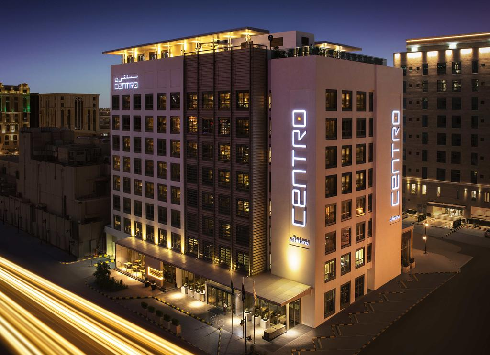

Highly motivated Solution Architect with extensive Presales skills (Design, Presentations, RFPs, Technical Offers) and Customer facing talent. Skilled in VOIP/Infrastructure With 10+ years of Experience with more than 6 years of leadership. Fast learner and always passionate about learning new things. Very interested in Programming, Linux, Virtualization, and Networks.
About Me
Latest Projects
EEHC Smart Meters DR Project
Leaded the technical team and arranged with all other teams’ members needed from other teams after the awarding. Support the Project Manager during procurements. Put technical plan including time line for all tasks with coordination with other teams involved in the project including all dependencies and critical paths. Focal technical point of contact in all internal teams meetings. Managed the internal team resources, training plans, and all needed resources for smooth delivery of project and meeting the deadline. Project Technologies( Oracle Applications, Cisco ACI model switches, Fortinet Firewalls, Oracle DB, ZFS Storage technology, Zero Data Loss Rack for Backup, Oracle ExaData technology, Oracle Super Cluster Hardware)

Telecom Egypt - WE - IVR/Contact Center Upgrade
- Leaded the presales team during bidding phase. - Studied the RFP and come up with full understanding and clarifications on all vague points. - All customer facing meetings and requirements gathering workshops. - Wrote the Technical offer as per RFP guide lines including the exact scope of work, compliance matrix, and BOM. - Leaded the technical team and arranged with all other teams’ members needed from other teams after the awarding. - Kept the customer satisfaction as a first priority. - Support the Project Manager during procurements. - Leaded all coordination with customer stack holders. - Put technical plan including time line for all tasks with coordination with other teams involved in the project including all dependencies and critical paths and highlighting all financial milestones that will be affected by delivery milestones. - Focal technical point of contact in all customer facing meetings. - Manage new customer requirements and discuss with project team and project manager. - Managed the team resources, training plans, and all needed resources for smooth delivery of project and meeting the deadline.
Zohr Gas Field - Telecommunication Infrastructure
- Engaged in presales/bidding phased in the Collaboration part. - Studied the Collaboration part in the RFP and come up with full understanding and clarifications on all vague points. - All customer facing meetings and requirements gathering workshops. - Wrote the Technical offer (Collaboration Part) as per RFP guide lines including the exact scope of work, compliance matrix, and BOM. - Leaded the technical team and arranged with all other teams’ members needed from other teams after the awarding. - Kept the customer satisfaction as a first priority. - Support the Project Manager during procurements. - Leaded all coordination with customer stack holders and the Consultant representatives. - Put technical plan including time line for all tasks with coordination with other teams involved in the project including all dependencies and critical paths and highlighting all financial milestones that will be affected by delivery milestones. - Focal technical point of contact in all customer facing meetings. - Manage new customer requirements and discuss with project team and project manager. - Managed the team resources, training plans, and all needed resources for smooth delivery of project and meeting the deadline.
ERI Buildings A and B Collaboration Scope
- All customer facing meetings and requirements gathering workshops. - Wrote the Technical offer (Collaboration Part) as per RFP guide lines including the exact scope of work, compliance matrix, and BOM. - Leaded the technical team and arranged with all other teams’ members needed from other teams after the awarding. - Kept the customer satisfaction as a first priority. - Support the Project Manager during procurements. - Leaded all coordination with customer stack holders and the Consultant representatives. - Put technical plan including time line for all tasks with coordination with other teams involved in the project including all dependencies and critical paths and highlighting all financial milestones that will be affected by delivery milestones. - Focal technical point of contact in all customer facing meetings. - Manage new customer requirements and discuss with project team and project manager. - Managed the team resources, training plans, and all needed resources for smooth delivery of project and meeting the deadline.

Centro Rotana Hotels Network and IP telephony (Riyadh/SAE)
- Alcatel OXE IP Telephony. - Alcatel OXE Voicemail. - Aruba wireless controller. - Aruba Access points. - Aruba Core Switch. - Aruba Access Switches. - Integration with FEDILIO Hoteling system.
Highlighting Skills
Presales
- RFPS preparing. - RFPS responding. - Customer Facing meetings. - Product Presentations. - Technical Offers.
Team Management
- Give coaching for Collaboration team members during implementation tasks. - Set clear team goals. - Delegate tasks to Seniors and set deadlines. - Oversee day-to-day operation and projects implementation. - Monitor team performance and report on metrics. - Motivate team members. - Discover/set training needs and provide training plans for each year. - Listen to team members’ feedback and resolve any issues or conflicts. - Recognize high performance and reward accomplishments.
Project/Bid Management
- Follow up the projects' plans and Technical progress and coach Technical resources in running projects. - Technical follow up on third parties to insure that the technical scope in projects is fulfilled. - Handle Customer and Vendor technical communications. - Understand, implement and integrate different technologies successfully. - Assure that solution implementation is as the approved design. - Contribute in high complex implementation tasks whenever needed.
Work Experience
Technical Lead - Giza Systems (2017 - Present)
- Lead Bidding activities for Large-scale opportunities. - Customer facing technical meetings. - Verify solution and scope with Pre-sales team and Project Manager. - Review/approve engineering software/hardware design documents. - Approve project Bill of material. - Support Project Manager during procurements. - Lead of at least one of the Mega projects (> 5M$ budget projects). - Lead project Technical Team to put solution Low Level Design. - Put High level Design and pre-requisites for the project with Technical team and third parties. - Technical hand over for awarded projects from Pre-Sales. - Lead Project assigned Technical Team to secure implementing projects having Infrastructure solution. - Follow up the projects, Technical progress and coach Technical resources in running projects. - Technical follow up on third parties to insure that the technical scope in projects is fulfilled. - Handle Customer and Vendor technical communications. - Understand, implement and integrate different technologies successfully. - Deal with solution conflicts and take the necessary actions to resolve. - Manage new customer requirements and discuss with project team and project manager. - Assure that solution implementation is as the approved design. - Contribute in high complex implementation tasks whenever needed. - Participate in Pre-sales activities (bidding, design, and customer requirements). - Give coaching for Collaboration team members during implementation tasks. - Set clear Collaboration team goals. - Oversee day-to-day operation and projects implementation. - Monitor team performance and report on metrics. - Motivate team members. - Discover/set training needs and provide training plans for each quarter of year. - Listen to team members’ feedback and resolve any issues or conflicts. - Recognize high performance and reward accomplishments. - Encourage creativity and risk-taking. - Suggest and organize team building activities. - Develop a strategy the team will use to reach its goals. - Provide any training that team members need. - Monitor team members' participation to ensure the training they are being provided is being put into use, and also to see if any additional training is needed. - Delegate tasks to Seniors and set deadlines.
Senior Contact Centers Engineer - Giza Systems (2014 - 2016)
- Responsible for the supervision of junior voice team members. - Put Project Technical plans, Technical Designs. - Implement complex technical tasks during projects. - Follow up plan progress and find work around for plan leakage absorption if needed. - Provide first level leader support in chain of command with team members. - Administer and adhere to corporate and departmental policies, practices and procedures, including union contract administration. - Plan and communicate the daily production schedule to staff and maintain control of the inventory. - Monitor processes and ensure that operational standards and customer specific performance guarantees are met. - Identify opportunities and implement solutions for workflow, system, and other process improvements. - Develop and maintain strong and positive working relationships with respective Union Leadership. - Interface with internal and external stakeholders, provide solutions to meet operation standards, solve simple business problems, and main problems.
Contact Centers Engineer - Giza Systems (2011 - 2014)
- Implements IP Telephony solutions, Contact Center. - Prepares a Design-document according to the requirements analysis done, get the document reviewed and approved by the Contact Centers Team Leader before submission to the customer. - Undertakes the implementation, installation, and customization activities for customer projects as per assignment. - Undertakes the activities of integration between the Contact Center Applications and customers’ business applications based on detailed customer’s requirements. - Develops testing applications and undertakes the actual testing activities as per Customers’ requirements and according to standard policies and prepares and submits the required testing reports. - Updates the Team Leader on the progress of work assigned and prepares and submits weekly progress reports. - Guides, directs, and support the newly hired Contact Centers Engineers running projects to provide them with the needed field experience. - Provides the required technical support during the pre-sales phase aiming at having strong technical offerings. - Complete personal professional certification and product authorization according to the training programs available through the vendors. - Responsible for Service Level Agreements which might include 24X7 commitments including the formal vacations in Egypt.